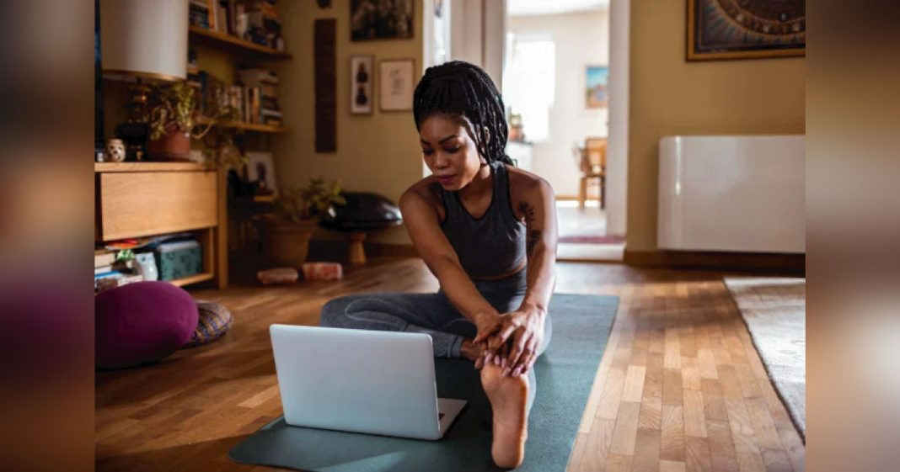
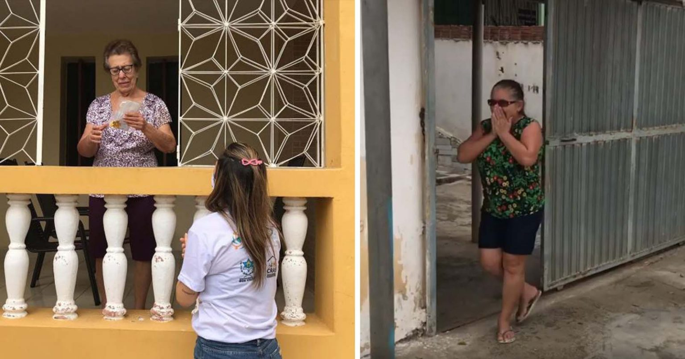
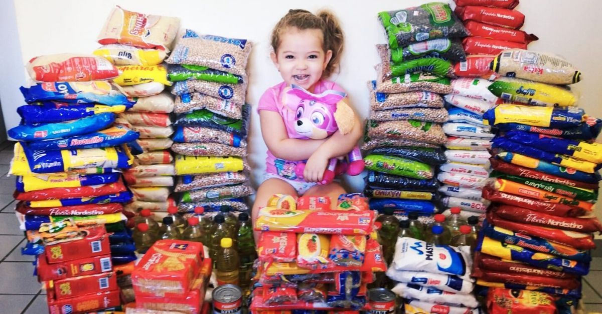

O Lado Bom Da COVID-19
Menina de 14 anos descobre possível remédio para a Covid-19 e vence prêmio de melhor jovem cientista dos EUA
Há uma grande corrida entre os cientistas, pela descoberta de uma vacina para a Covi-19. E agora, essa batalha contra o vírus ganhou mais uma aliada: Anika Chebrolu.

Anika tem 14 anos e realizou diversas pesquisas na tentativa de se conectar ao Sars-Cov-2, buscando inviabilizar a contaminação do vírus.
E parece que ela conseguiu!
Apesar de o experimento de Anika ainda ser um teste computacional- ele não chegou a ser testado efetivamente em humanos -, os resultados são bem promissores. A descoberta rendeu, inclusive, um prêmio para a estudante, o Melhor Jovem Cientista da América de 2020.Pesquisas
Anika usou simulações de computador para conseguir rastrear moléculas capazes de se conectar com o Sars-Cov-2. Isso permitiria uma ligação à proteína Spike do vírus, bloqueando-a e evitando a disseminação da Covid-19.Alguns especialistas já analisaram a pesquisa da Anika e confirmaram que a proteína é realmente o caminho para o tratamento, e ela é o alvo dos anticorpos do sistema imunológico.
E segundo Anika, essa foi uma descoberta involuntária. Ela realizava uma pesquisa sobre a Gripe Espanhola, só que com a pandemia, resolveu mudar o foco. O que a estudante percebeu, é que parte da sua pesquisa anterior, poderia encaminhá-la para a solução do vírus.
“Por causa da imensa gravidade da pandemia de Covid-19 e do impacto drástico que ela causou no mundo em tão pouco tempo, eu, com a ajuda da minha mentora, mudamos a direção para atingir o vírus Sars-Cov-2", contou.
“Saúde mental” bate recorde de busca no Google durante a quarentena
A quarentena fez todo mundo buscar alternativas para a manter a saúde emocional em dia. E não foi por acaso que o Google registrou recorde de buscas relacionadas a esse tema desde março.
De acordo com o Google Trends, se compararmos algumas buscas em relação ao ano passado, percebemos um aumento considerável, chegando a 61% a mais.
Um dos motivos é o alto índice de pacientes com transtornos de ansiedade e depressão. Hoje, o Brasil ocupa o quinto lugar no ranking mundial desses diagnósticos.

Interesse por saúde emocional permanece após pandemia
Mariana Luz, psicóloga, acha que esse interesse por saúde emocional ainda vai permanecer mesmo após a distribuição de uma vacina.“Com os números de contaminados e mortos pela Covid no Brasil, mesmo depois da vacina, ainda vamos colher e lidar com esse alto nível de estresse. A questão econômica e social também afeta a saúde mental”, explica.
Voluntários fazem ‘Delivery de Amor’ para idosas isoladas em Boa Vista (PB)
A dona Teleleu e a dona Zuza participavam do grupo Experiência e Vida promovido pelo Centro de Referência da Assistência Social (CRAS) de Boa Vista (PB) até o início da pandemia.
Por conta do distanciamento social, as idosas não viam as amigas há um tempão.
Para matar a saudade e dizer a elas pra permanecerem firmes, as voluntárias do Cras foram até a casa delas. É o projeto Carinho em Casa, que busca fortalecer os laços do grupo Experiência e Vida.

Dona Teleleu, professora aposentada, recebeu o delivery de amor dos voluntários e, surpresa, ficou bastante emocionada.
“A senhora sabe que mora no nosso coração e independente da presença física, (sabe) do carinho que a gente tem, ele é imenso e eu não conseguiria descrever só com palavras”, diz uma voluntária.
Nesse momento, a idosa começa a chorar. “Muito obrigado pelo carinho que a senhora tem comigo, na vida profissional, na vida pessoal. Eu ouvi uma música e lembrei da senhora, o quanto a senhora é fina, porque até o seu gosto musical é refinado. Queríamos agradecer por tudo”.
Depois de algumas lágrimas de felicidade, dona Teleleu começa a dançar a música que toca ao fundo e abre um sorrisão no rosto!
Pesquisa EXAME/IDEA: Popularidade do governo Bolsonaro cai de 41% para 35% em duas semanas
A aprovação do governo do presidente Jair Bolsonaro (sem partido) caiu de 41% para 35% em duas semanas. É o que mostra o levantamento mais recente da pesquisa EXAME/IDEA.
A aprovação do governo do presidente Jair Bolsonaro (sem partido) caiu de 41% para 35% em duas semanas. É o que mostra o levantamento mais recente da pesquisa EXAME/IDEA.
Foram ouvidas 1.200 pessoas entre 30 de novembro e 3 de dezembro. A margem de erro é de 3 pontos percentuais.
A desaprovação do governo federal cresceu de 31% para 38%. Essa é a primeira vez em que a avaliação negativa supera a aprovação. Entre os entrevistados, 27% consideram o governo regular.
Estima-se que a queda da aprovação de Bolsonaro tenha relação com o fim do auxílio emergencial. Não há previsão para extensão do benefício para 2021. No período em que o benefício foi pago aos brasileiros em situação de vulnerabilidade, a aprovação do governo subiu.
À Exame, Maurício Moura, fundador do IDEA, afirmou que aprovação do governo federal é maior nas regiões Norte, com 62% de aprovação, no Centro-Oeste, com 47%, e entre os evangélicos, com 44%.
Entre as classes D e E, a popularidade caiu, mas desde da margem de erro.
Pais trocam presentes de aniversário da filha por alimentos para doar e ela adora
A ideia não é nova… Trocar os presentes de aniversário de uma criança por produtos para serem doados a pessoas que necessitam. Mas nenhuma garota certamente ficou tão feliz quanto a pequena Maria Luísa.
“Ela apenas se divertia com tudo isso, querendo brincar com os pacotes e latas de alimentos rsrs, mas sei que no fundo ela entendeu o gesto”, disse o pai, Brauro Gomes.
“Luísa ainda não entende, acha o máximo ficar brincando de montanha e vendo um monte de pacote de alimentos, mas sei que mais pra frente vai compreender o gesto que ela fez ao próximo”, disse a mãe, Waleska Santos.

Realmente pela imagem dá para ver e sentir o quanto ela gostou da brincadeira muito séria e necessária para tantas famílias.
O desejo de trocar os presentes por doações é antigo e foi realizado agora por causa da pandemia.
“Tivemos a ideia quando Luísa nasceu, porém como Luísa ainda era muito nova, deixamos mais pra frente pra que a gente pudesse mostrar para ela e que ela vivesse isso com a gente”, explicou o pai.
E foi exatamente isso o que aconteceu. Maria Luísa sentiu toda essa energia boa da ação dos pais e amigos.
"Ela não entendeu muito bem, porém a todo momento em cada amigo e amiga que íamos buscar os alimentos… depois na montagem das cestas, ficávamos falando pra ela sobre doar às pessoas que estão precisando", disse Brauro.
Nova Zelândia está livre do coronavírus e suspende restrições
A Nova Zelândia acaba de confirmar uma notícia esperançosa para o resto do mundo. O país informou que finalmente está livre do novo coronavírus e suspendeu todas as restrições de convívio e fechamento de empresas após passar mais de três meses em quarentena.
Durante coletiva de imprensa, Jacinda Ardern, primeira-ministra da Nova Zelândia, se sentiu agradecida por todo o apoio que recebeu da população do país, ao adotar medidas restritivas durante a pandemia. “Embora o trabalho não esteja concluído, não há como negar que este é um marco. Obrigada, Nova Zelândia”, segundo publicado pela Veja.
Jacinda Ardern ainda afirma, “(…) estamos confiantes de que eliminamos a transmissão do vírus na Nova Zelândia por enquanto.”
A primeira-ministra do país foi uma das principais líderes mundiais na luta contra a Covid-19 e se tornou referência entre os países que conseguiram driblar a pandemia com maior agilidade.
Medidas de segurança sanitária exigiram estratégias mais agressivas, usando como base os estudos de infectologistas que trabalharam desde o começo para conscientizar a população, evitando uma crise na saúde nacional.
Conforme publicado no site de viagens Guia Viajar Melhor, os cidadãos neozelandeses já podem frequentar eventos públicos e locais privados, museus, shoppings, parques e comércios locais, além de poderem usar transportes públicos sem nenhuma restrição de distanciamento mínimo.
Esse resultado positivo após a quarentena deve-se às medidas de restrição, uma das mais rigorosas implementadas no mundo.